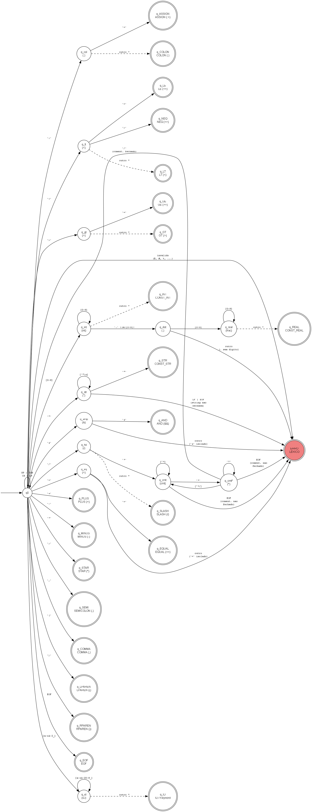

AFD e Gramática Formal da Linguagem BRL
Trabalho Prático de Compiladores — Ciência da Computação
Faculdade Dom Helder | Professor: Prof. Dr. Marcos W. Rodrigues
Integrantes: Rafael De Andrade Alves | Vinicius Barros Marinho
O AFD abaixo descreve o analisador léxico da linguagem BRL.
Cada caminho do estado inicial q0 até um estado de aceitação
corresponde a um tipo de token reconhecido. O estado ERRO_LEXICO
é alcançado para qualquer caractere que não pertença ao conjunto válido da linguagem.

Figura 1 — AFD completo da linguagem BRL (gerado com Graphviz)
| Categoria | Estado(s) | Descrição |
|---|---|---|
| Inicial | q0 |
Estado inicial — despacha para o estado correto conforme o 1.º caractere |
| Identificadores | q_id_body → q_ID |
Reconhece identificadores e palavras reservadas |
| Constante inteira | q_int_body → q_INT |
Sequência de dígitos [0-9]+ |
| Constante real | q_dot → q_real_body → q_REAL |
Dígitos, ponto, dígitos: [0-9]+'.'[0-9]+ |
| String literal | q_str_body → q_STR |
Conteúdo entre aspas duplas; LF/EOF → erro |
| Comentário | q_fslash → q_cmt_body → q_cmt_star → q0 |
Bloco /* ... */; EOF sem fechar → erro |
| Operadores compostos | q_colon_st, q_lt_st, q_gt_st, q_eq_st, q_amp_st |
Lookahead de 1 char para :=, <>, <=, >=, ==, && |
| Aceitação (tokens) | q_ID, q_INT, q_REAL, q_STR, q_PLUS, q_MINUS, q_STAR, q_SLASH, q_SEMI, q_COMMA, q_LPAREN, q_RPAREN, q_COLON, q_ASSIGN, q_AND, q_LT, q_GT, q_LE, q_GE, q_NEQ, q_EQUAL, q_EOF |
22 estados de aceitação — um por tipo de token |
| Erro | ERRO_LEXICO |
Caractere inválido ou sequência não reconhecida |
Reconhecidas a partir do estado q_ID por tabela hash O(1):
inteiro, real, logico, caractere,
se, entao, senao,
enquanto, faca,
inicio, fim,
leia, escreva,
ou, div, mod,
verdadeiro, falso, not.
A gramática da linguagem BRL é uma gramática livre de contexto LL(1),
implementada por descida recursiva com lookahead de 1 token.
A notação utilizada é EBNF (Extended Backus-Naur Form):
{ X } indica zero ou mais repetições de X;
[ X ] indica X opcional;
| indica alternativa.
(* Estrutura do programa *)
programa → 'inicio' ID ';' declaracoes instrucoes 'fim'
(* Declarações de variáveis *)
declaracoes → { declaracao }
declaracao → id_list ':' tipo ';'
id_list → ID { ',' ID }
tipo → 'inteiro' | 'real' | 'logico' | 'caractere'
(* Instruções *)
instrucoes → { instrucao }
instrucao → atribuicao | se | leia | escreva | enquanto
atribuicao → ID ':=' exp ';'
se → 'se' exp 'entao' 'inicio' instrucoes 'fim'
[ 'senao' 'inicio' instrucoes 'fim' ]
leia → 'leia' '(' ID { ',' ID } ')' ';'
escreva → 'escreva' '(' exp ')' ';'
enquanto → 'enquanto' exp 'faca' 'inicio' instrucoes 'fim'
(* Expressões — hierarquia de precedência crescente *)
exp → exp_add { RELOP exp_add }
RELOP → '==' | '<>' | '<' | '>' | '<=' | '>='
exp_add → exp_mul { ADDOP exp_mul }
ADDOP → '+' | '-' | 'ou'
exp_mul → exp_unario { MULOP exp_unario }
MULOP → '*' | '/' | 'div' | 'mod' | '&&'
exp_unario → 'not' exp_unario | '-' exp_unario | primario
primario → ID
| CONST_INT
| CONST_REAL
| CONST_STRING
| 'verdadeiro'
| 'falso'
| '(' exp ')'
| Propriedade | Status | Justificativa |
|---|---|---|
| Livre de contexto | ✓ Sim | Todo lado esquerdo é exatamente um não-terminal |
| LL(1) | ✓ Sim | Cada alternativa é determinada por 1 token de lookahead; sem conflito FIRST/FOLLOW |
| Sem ambiguidade | ✓ Sim | Hierarquia de precedência encodeada nas produções; dangling-else resolvido de forma gulosa |
| Precedência correta | ✓ Sim | Parênteses > not/unário > * / div mod && > + - ou > relacionais |
| Sem recursão à esquerda | ✓ Sim | Repetições usam while (EBNF { }) — compatível com descida recursiva |
| Tipo BRL | Tamanho (MASM) | Intervalo / Descrição | Representação Assembly |
|---|---|---|---|
inteiro |
4 bytes (DD) | −2³¹ a 2³¹−1 (acesso efetivo: 16 bits) | DD ? |
real |
4 bytes (DD) | 7 dígitos de precisão (FP não implementado) | DD ? |
logico |
1 byte (DB) | 0h = falso, FFh = verdadeiro |
DB ? |
caractere |
512 bytes | String terminada por $ (INT 21h/AH=09h) |
DB 512 DUP(?) |
| Operação | Operandos Válidos | Tipo Resultante |
|---|---|---|
Aritmética (+ - * / div mod) |
inteiro, real (ou mistos) |
Tipo dominante (real se houver real) |
div, mod |
inteiro apenas |
inteiro |
Lógica (&&, ou, not) |
logico |
logico |
Relacional (== <> < > <= >=) |
Numéricos (inteiro, real) ou logico (apenas ==) |
logico |
Atribuição (:=) |
Tipos compatíveis; inteiro → real permitido |
— |
Condição (se, enquanto) |
logico obrigatório |
— |
Documento gerado em 09/06/2026 como parte do Trabalho Prático de Compiladores.
Para obter o PDF: abrir este arquivo no navegador → Arquivo → Imprimir → Salvar como PDF.